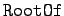
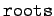
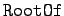
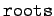
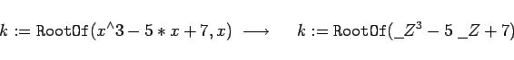
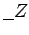
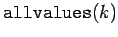
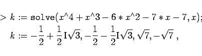
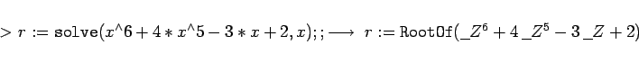

Inhalt Index DeskTop Bronstein

 Computeralgebrasysteme Anwendungen von Computeralgebrasystemen Lösung von Gleichungen und Gleichungssystemen Maple
Computeralgebrasysteme Anwendungen von Computeralgebrasystemen Lösung von Gleichungen und Gleichungssystemen Maple


Die beiden grundsätzlichen Operationen zur symbolischen Lösung von Gleichungen in Maple sind  und  bzw. . Mit ihnen und ihren möglichen Variationen durch bestimmte optionale Argumente gelingt es, eine Vielzahl von Gleichungen, auch transzendente, zu lösen. Wenn eine Gleichung nicht in geschlossener Form lösbar ist, kann Maple nur numerische Näherungslösungen anbieten.
und  bzw. . Mit ihnen und ihren möglichen Variationen durch bestimmte optionale Argumente gelingt es, eine Vielzahl von Gleichungen, auch transzendente, zu lösen. Wenn eine Gleichung nicht in geschlossener Form lösbar ist, kann Maple nur numerische Näherungslösungen anbieten.
Die Funktion ist das Symbol für alle Wurzeln einer Gleichung einer Variablen. Mit
|  | (20.61) |
versteht Maple unter k die Gesamtheit der Wurzeln der Gleichung x3-5x+7=0. Dabei wird der eingegebene Ausdruck, wenn möglich, in eine einfache Form gebracht und mit der globalen Variablen  dargestellt. Der Aufruf  liefert eine Folge der Wurzeln.
Der Befehl  liefert die Lösung einer Gleichung, sofern diese existiert.
liefert die Lösung einer Gleichung, sofern diese existiert.
| Beispiel |
|


|